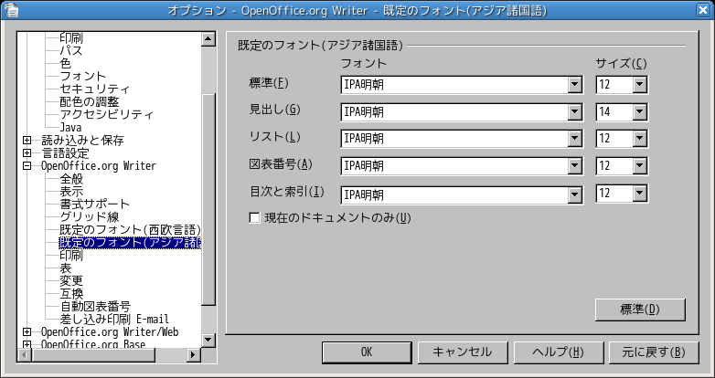
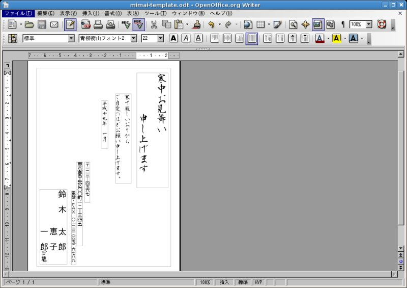
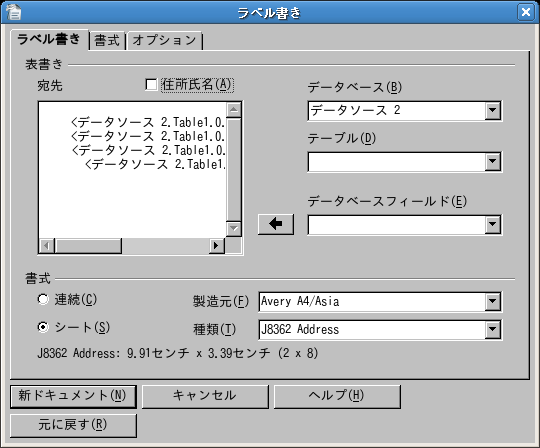
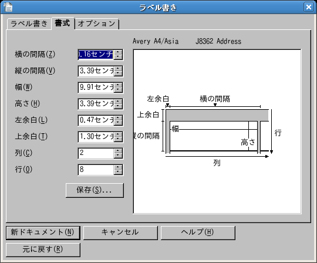
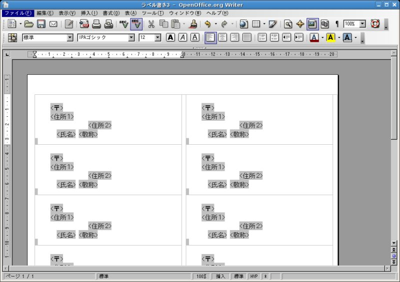

OpenOffice.org フリーなオフィススイート 
- OpenOffice.org フリーなオフィススイート
- OpenOffice.org（オープンオフィス）とは何ですか？
- オープンオフィスの入口は？
- 以前のニュース
- ダウンロードするには？
- 解説書（マニュアル）を入手するには？
- 公式FAQ集はどこにありますか？
- OpenOffice.org 3.0 FAQ
- OpenOffice.org 2.0 FAQ
- OpenOffice.org 1.1 FAQ
- ファイル形式について
- 標準のフォントを変更するには？（ワープロ）
- IPAフォントが綺麗に表示されません（ワープロ）
- 標準の書式を変更するには？（ワープロ、表計算）
- 日本語版ユーザー向けテンプレート（その1）
- 日本語版ユーザー向けテンプレート（その2）
- 住所録を作成するには？
- はがきの宛名印刷を行うには？
- 「差し込み印刷ウィザード」とは？
- 挨拶状（はがきの裏面）作成のコツ
- 宛名ラベルを印刷するには？
- 英語版に一時的に切替えたいときは？
OpenOffice.org（オープンオフィス）とは何ですか？
基本機能
統合オフィススイートとして、以下の機能を備えています。
- ワープロ (Writer)
- 表計算 (Calc)
- データベース (Base)
- プレゼンテーション (Impress)
- HTMLエディタ
- 描画 (Draw)
- 数式エディタ (Math)
- マクロ
その概要
近年、「OpenOffice.org（オープンオフィス）」という文書作成用の統合ソフトウェアが登場しました。Microsoft Word（ワード）と互換性があり、同等の機能を発揮することを目指して開発されています。このソフトウェアはインターネット上で無料配 布されているので、誰でも自由に使うことが出来ますし、自由に再頒布することがLGPLというライセンスのもとに認められています。無料でありながら高 機能な文書作成 ツールということで、最近注目されるようになっています。
一方、マイクロソフト社が販売する「ワード」を含んだ統合ソフトウェア「Microsoft Office（マイクロソフト・オフィス）」は、有名であっても大変高価なところが困りものです。もちろん、コピーして他人に配るという ことも認められていません。改訂版が発売されるたびに買い換えていたのでは、とても不経済でしょう。頻繁にセキュリティ上の欠陥が発見されているので、ウ イルス対策などに も気を付ける必要があります。
このように、OpenOffice.orgは市販されている製品版に決して負けないくらいの性能を備 えています。恐らく初めての方は、「Q.なぜいきなりの完成度がこれほど高いのですか？」という疑問が湧くでしょう。この説明は公式QandAページにあります。
『それはずばり、もともと「どっかの会社の製品だったから」です。どっかとは今は無きStarDivision?社
な訳ですが、日本語版も企んでいた最中にSUNに買収されソースコードが撒かれてしまったので、はじめから完成度が結構なものだったので
す。
日本語版や韓国版は2バイトコードの国なので、それなりの改良をしなくてはいけないと言うことで、ずいぶん前から改良されて先の
Version 1.0でそこそこ使えるところにまで持ってこられたということなのです。』とされています。納得いきましたか？
オープンオフィスの入口は？
以下、いずれかのウェブサイトを選んで入ってください。
以前のニュース
- http://ja.openoffice.org/#news (Apache OpenOffice のページ)
- マイクロソフト社OpenDocument暫定対応に対する,OpenOffice.orgコミュニティの声明 (リンク切れ)
- OpenOffice.org日本ユーザー会が法人化
- OpenOffice.org日本ユーザー会、法人化のお知らせ
- OpenOffice.or g日本ユーザー会とOpen Office.org日本語 プロジェクトの関係について
ダウンロードするには？
入手先（ダウンロード先）：
- OpenOffice.org 最新日本語版 のダウンロード（バージョン3.3.0 2011-02）
- OpenOffice.org 3.1.1日本語版のダウンロード
- OpenOffice.org 2.4.3 日本語版のダウンロード
解説書（マニュアル）を入手するには？
公式FAQ集はどこにありますか？
OpenOffice.org 日本ユーザー会には、Linux に特化した多数のFAQが用意されています。
http://oooug.jp/faq/index.php?Faq%2Funix
OpenOffice.org 3.0 FAQ
OpenOffice.org 2.0 FAQ
OpenOffice.org 1.1 FAQ
ファイル形式について
OpenOffice.org 3.0/2.0 では、標準で OpenDocument ファイル形式が採用され、以下のファイル形式が使用されます。（OpenOffice.org 1.0 の場合、これとは異なります）
ドキュメント書式 / ファイル拡張子
- ODF テキスト / *.odt
- ODF テキストテンプレート / *.ott
- ODF マスタードキュメント / *.odm
- HTML ドキュメント / *.html
- HTML ドキュメントテンプレート / *.oth
- ODF 表計算ドキュメント / *.ods
- ODF 表計算ドキュメントテンプレート / *.ots
- ODF 描画 / *.odg
- ODF 図形描画テンプレート / *.otg
- ODF プレゼンテーション / *.odp
- ODF プレゼンテーションテンプレート / *.otp
- ODF 数式 / *.odf
- ODF データベース / *.odb
- ODF データベースレポート / *.orp
標準のフォントを変更するには？（ワープロ）
- OpenOffice.org Writer を起動します。
- [メニュー] > [ツール] > [オプション] > [OpenOffice.org Writer] > [既定のフォント]（アジア諸国語）を選択します。アルファベットも同じ書体を用いたいときは、「既定のフォント（西欧言語）」の項 目も変更してくださ い。同一書体を用いると違和感が少なくなります。
- 希望のフォントを指定します。以降、毎回起動時に適用されます。

IPAフォントが綺麗に表示されません（ワープロ）
これは、文書表示の倍率に原因があります。メニューの [表示] > [ズーム] より、ズーム率を Optimai（最適）や Page Width（ページ幅）へ切替えて見ることをおすすめします。ズーム率100% では見辛くなるようです。
- 選択した倍率は、次回起動時も維持されます。
標準の書式を変更するには？（ワープロ、表計算）
標準の書式は、使用している OS に従って自動的に設定されます。標準のフォントはオプションの設定より変更可能ですが、それ以外の項目は「スタイルと書式」で変更しても 一時的に反映され るだけです。Microsoft Office の場合、標準の書式を変更すると恒常的に反映されますが、OpenOffice.org には同様な機能が実装されておらず、今後の懸案事項となっています。
現状では、次項で説明しているようなテンプレートの利用をおすすめします。
- 参考 faq/1 /123 - 標準フォントを変更するには？ (OpenOffice.org Q&A)
日本語版ユーザー向けテンプレート（その1）
自由に使えるテンプレートが公開されています。標準の日本語用フォントは IPAフォン トです（ただし、英数字用フォントは arial または Times New Roman）。
このテンプレートは、標準スタイルとして IPAフォントが割り当てられ、フォントサイズ・禁則処理なども日本語に即したものに設定されています。テンプレートの種類は以下のとお りです。
- 文書ドキュメント = template4ja.ott
- 表計算ドキュメント = template4ja.ots
- プレゼンテーション = template4ja.otp
- 図形描画 = template4ja.otg
日本語用独自テンプレート（カスタマイズ版）
当サイトでも、独自に作成したテンプレート（カスタマイズ版）を2種類公開しています。これは上記項目で紹介した文書ドキュメント （template4ja.ott）と表計算ドキュメント（template4ja.ots）に手を加えたものです。同梱の changelog に変更点の詳細を書いてあります。
- カ スタマイズ版のダウンロード（ファイル名：odf_template4ja_custom.zip）
日本語版ユーザー向けテンプレート（その2）
日本語用および英数字用ともに IPAフォントが標準のテンプレートは、「日 本語環境改善拡張機能」の使い方で配布されています。拡張子の oxt を zip に変えてアーカイブを展開すれば、同梱している日本語環境用のテンプレートを取り出せます。
住所録を作成するには？
はがきの宛名印刷を行うには？
「差し込み印刷ウィザード」とは？
挨拶状（はがきの裏面）作成のコツ
年賀状や見舞状の作成（裏面のレイアウト）について説明します。
はがき裏面の作成にワープロソフトを利用する場合、用紙サイズの設定を「はがき」に合わすことに注意してください。利用するワープロソ フトの簡単な使い方が分かっていれば、作成上とくに難しい点はありません。挨拶状はたいてい定型文なので、テキストボックスを予め埋め込み、テンプ レートを作成してお けば役立ちます。以下、テンプレートを用意してみました。
また、下記の推奨フリーイラスト公開サイトからは、ダウンロードするだけでそのまま印刷可能な多数のイラスト集が入手できます。
はがき裏面テンプレート
レイアウトのひながたを用意しました。リンク先をダウンロードした後、上書きして使ってください。テンプレートは自由に改変や再配布し ていただいて構いません。下記「推奨フリーイラスト公開サイト」にあるイラストを貼り付けて独自なものが作成できます。なお、イラストは「背景」とし て挿入する（貼り付ける）と、レイアウトを崩さず好きな場所に配置することができます。

好適な日本語フォント
- 青柳衡山フォント 2（外部リンク）
書家の青柳衡山先生が作成された毛筆フォントです。JIS漢字第二水準まで対応しています。
推奨フリーイラスト公開サイト
無料で利用可能なサイトの一例です。
宛名ラベルを印刷するには？
あらかじめ、作成した住所録がデータベースに登録されていることが条件となります。
1. OpenOffice.org を起動させて、メニューより [新規作成]＞[ラベル] を選択します。ラベル作成のウィザードが起動するので、その手順にしたがって作業を進めます。

2. 希望するラベルメーカーのひながたが一覧に見つからない時は、ユーザーのカスタム様式を設定することができます。

設定が完了したら、「新ドキュメント」のボタンを押します。
3. メニューの [ファイル]＞[印刷] より差し込み印刷を実行します。

- OpenOffice.org バナーキャンペーン
詳細はこちらから： http://ja.openoffice.org/start/campain.html
英語版に一時的に切替えたいときは？
ターミナルより、次のコマンドを実行します。メニューやフォントも全て英文用になります。
$ LANG=C openoffice
あるいは、
$ LANG=C soffice
HOME